圖檔對照表
全題庫共 1149 題，其中 47 題含圖：題幹圖 40 題、選項圖 7 題（每題 4 張）。
需準備圖檔總數：68 張。
補圖說明
上傳位置：把圖檔放進 images/ 資料夾，檔名一定要和下方標示完全一致，放進去後本頁重新整理就會顯示縮圖。
命名規則：題幹圖 = {原始題號}.png；選項圖 = {原始題號}-1.png ~ -4.png。
圖檔尺寸：題幹圖寬 320–640px、選項圖 約 400×400px，PNG 去背或白底，單檔 < 100KB。
專業科目 12500 建築物室內設計 · 工作項目 01 43 題
 未上傳
未上傳12500-01-3-1.png未上傳
12500-01-3-2.png 未上傳
未上傳12500-01-3-3.png 未上傳
未上傳12500-01-3-4.png未上傳
12500-01-4-1.png未上傳
12500-01-4-2.png 未上傳
未上傳12500-01-4-3.png未上傳
12500-01-4-4.png 未上傳
未上傳12500-01-5-1.png 未上傳
未上傳12500-01-5-2.png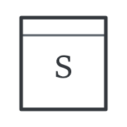
未上傳12500-01-5-3.png 未上傳
未上傳12500-01-5-4.png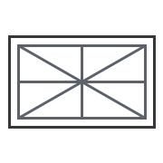
未上傳12500-01-6.png未上傳
12500-01-7.png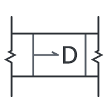
未上傳12500-01-8.png未上傳
12500-01-9.png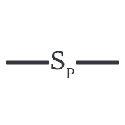
未上傳12500-01-10.png未上傳
12500-01-11.png未上傳
12500-01-12.png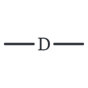
未上傳12500-01-13.png未上傳
12500-01-14.png未上傳
12500-01-15.png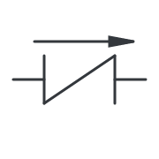
未上傳12500-01-16.png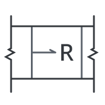
未上傳12500-01-17.png未上傳
12500-01-19.png未上傳
12500-01-20.png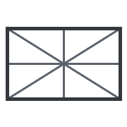
未上傳12500-01-21.png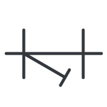
未上傳12500-01-22.png未上傳
12500-01-24.png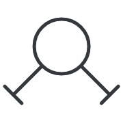
未上傳12500-01-25.png 未上傳
未上傳12500-01-26.png未上傳
12500-01-32.png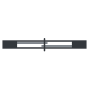
未上傳12500-01-33.png未上傳
12500-01-34.png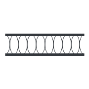
未上傳12500-01-35.png未上傳
12500-01-36.png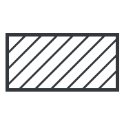
未上傳12500-01-37.png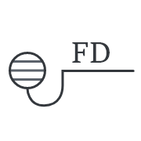
未上傳12500-01-39.png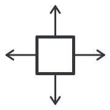
未上傳12500-01-41.png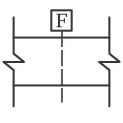
未上傳12500-01-42.png未上傳
12500-01-43.png 未上傳
未上傳12500-01-44.png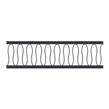
未上傳12500-01-45.png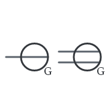
未上傳12500-01-48.png 未上傳
未上傳12500-01-49.png 未上傳
未上傳12500-01-50.png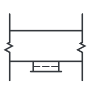
未上傳12500-01-51.png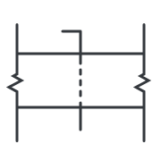
未上傳12500-01-52.png未上傳
12500-01-53.png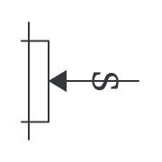
未上傳12500-01-54.png 未上傳
未上傳12500-01-95-1.png 未上傳
未上傳12500-01-95-2.png 未上傳
未上傳12500-01-95-3.png未上傳
12500-01-95-4.png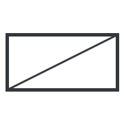
未上傳12500-01-96-1.png 未上傳
未上傳12500-01-96-2.png未上傳
12500-01-96-3.png 未上傳
未上傳12500-01-96-4.png共同科目 環境保護 · 工作項目 03 1 題
未上傳
90008-03-13-1.png未上傳
90008-03-13-2.png未上傳
90008-03-13-3.png 未上傳
未上傳90008-03-13-4.png共同科目 節能減碳 · 工作項目 04 3 題
未上傳
90009-04-2-1.png 未上傳
未上傳90009-04-2-2.png未上傳
90009-04-2-3.png未上傳
90009-04-2-4.png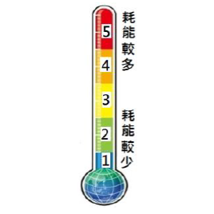
未上傳90009-04-69.png 未上傳
未上傳90009-04-86.png